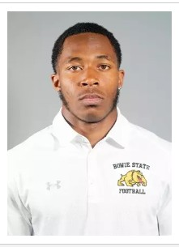

Senior at Bowie State University | Network Infrastructure | CEO of Lenair Auto Detailing
Jordan Williams possesses a diverse range of skills and experience across multiple industries, including business management, customer service, technology, and food service. As the Owner and CEO of Lenair Auto Detailing in Brandywine, MD, since May 2020, he has gained hands-on experience in managing business operations, handling customer inquiries, maintaining inventory, and operating equipment such as buffers and vacuums to meet service expectations. His leadership and organizational skills allow him to efficiently manage seasonal operations while ensuring high-quality service.
His experience in retail and food service includes working as a team member at Shoe City and Chick-fil-A, where he developed strong customer service skills, cash handling expertise, and the ability to manage inventory and restock supplies. At Shoe City, he assisted customers with shoe selections, operated the register, and processed transactions, while at Chick-fil-A, he maintained cleanliness, took customer orders, and followed strict health regulations. Currently, as a server at Harmony at Waldorf, he ensures a clean and orderly dining environment, serves residents and guests, and follows food safety protocols.
In addition to his professional experience, Jordan has a strong technical background as a senior at Bowie State University majoring in Computer Technology with a focus on Network Infrastructure. His technical skills include proficiency in Microsoft Word, JavaScript, and HTML5, as well as experience with computer hardware. His ability to balance technical knowledge with business and customer service skills demonstrates his adaptability and well-rounded expertise. Known for his reliability, time management, and organizational skills, Jordan is a responsible and dedicated professional who consistently delivers quality results in all his endeavors.
Check out my work on GitHub.
Download my resume here.
Connect with me on LinkedIn.